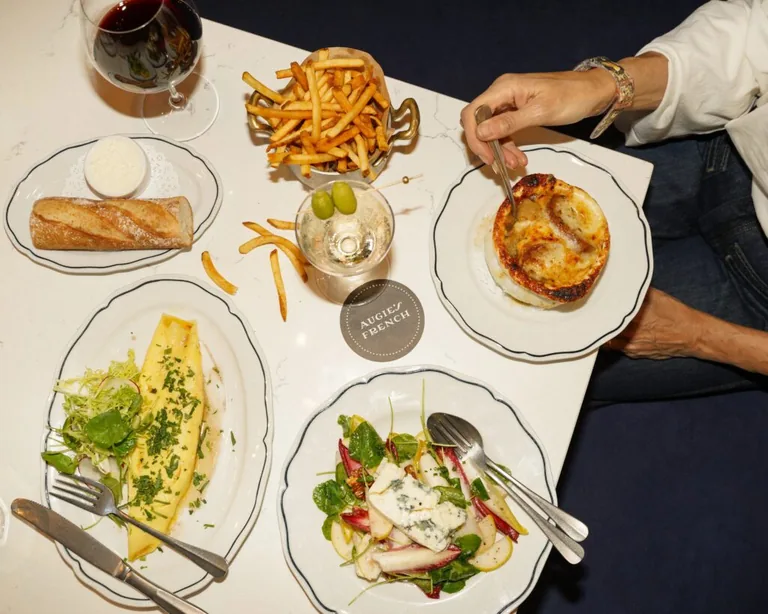

Santa Rosa sits in the middle of one of the richest farming regions in the country. The produce, cheese, oysters and wine that end up on menus in San Francisco often start here, and the downtown restaurants get it first. The result is a food scene that is serious without being fussy, and almost all of it is walkable from Old Courthouse Square.
Here is how to eat your way through a day.
Morning
Start small at Crook's Coffee on Mendocino Avenue, the closest good espresso to the square, open early on weekdays. If you want a proper breakfast, Omelette Express and Dierks Café are local institutions with more than a thousand reviews each, and Café Mimosa on College Avenue does brunch seven days a week.
Lunch
Lunch is where downtown shows its range. Grossman's Noshery & Bar serves elevated Jewish deli, with pastrami and latkes worth the walk to Wilson Street. Mac's Deli on 4th Street is the quick, classic option. For something brighter, Kalimera on B Street grills Mediterranean and Turkish plates with a strong bar program.
Pizza people should know about Loro di Napoli, which fires true Neapolitan pies in a wood oven, and Jackson's Bar & Oven in Railroad Square, which shows up on nearly every local best-of list.

Dinner
Much of downtown's fine dining traces back to one couple. Mark and Terri Stark, James Beard-nominated restaurateurs, run several of the city's best rooms:
- Bird & The Bottle, a modern tavern and one of Santa Rosa's most consistently top-rated restaurants.
- Stark's Steak & Seafood, a proper steakhouse with a live oyster bar and a deep Sonoma wine list.
- Augie's French, their newest, a classic bistro in an intimate room on 4th Street.
Beyond the Stark family, The Spinster Sisters does imaginative California farm-to-table cooking in a warm room, Eddie's Kitchen leans Italian with standout tuna dishes, and Darbar Kitchen covers Indian and Nepalese cooking with real regional depth. Lococo's is the Railroad Square pick for old-school Italian; reserve ahead on weekends.
Late night
Santa Rosa stays up later than you might expect. Haku Sushi and HanBul Korean BBQ, side by side on 7th Street, both keep their kitchens open until midnight. For drinks, J&A Lounge has live music and creative cocktails, The Goose & Fern pours British ales in a converted Victorian, and Beer Baron pairs a good tap list with food it takes seriously.
Good to know
- Book dinner ahead on Friday and Saturday, especially at the Stark restaurants.
- Many downtown kitchens close between lunch and dinner. Check hours before you walk over.
- Local farmers' markets run most weeks of the year and are a good way to graze.
Plan your table
The restaurant directory shows current hours, ratings and directions for every place mentioned here, and the downtown dining guide goes deeper on neighborhoods. Staying downtown makes all of it easier; our hotels, Art House Santa Rosa and Hotel E, are both inside the walking radius.
Plan your stay downtown
Browse hotels, restaurants, wineries and attractions, all in one place.
Open the directory